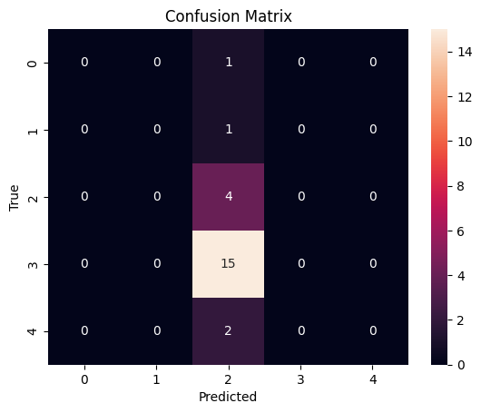

#Logistic Regression Logistic Regression adalah salah satu teknik dalam statistika dan machine learning yang digunakan untuk memodelkan dan menganalisis hubungan antara satu atau lebih variabel independen (fitur) dan variabel dependen biner (target). Berikut adalah penjelasan lengkap mengenai Logistic Regression:
1. Pengertian#
Logistic Regression adalah metode regresi yang digunakan untuk memprediksi probabilitas dari kelas tertentu. Meskipun namanya mengandung kata “regression”, Logistic Regression sering digunakan untuk masalah klasifikasi, khususnya untuk dua kelas (biner).
2. Dasar Teori#
Fungsi Logit: Logistic Regression menggunakan fungsi logit untuk mengubah nilai yang dihasilkan dari model linear menjadi probabilitas. Fungsi logit dapat dinyatakan sebagai:
\[ P(Y=1 | X) = \frac{1}{1 + e^{-(\beta_0 + \beta_1X_1 + \beta_2X_2 + ... + \beta_nX_n)}} \]di mana:
$(P(Y=1 | X))$ adalah probabilitas bahwa kelas target adalah 1 (positif).
(X) adalah fitur input.
\((beta_0, \beta_1, \ldots, \beta_n)\) adalah parameter model yang diestimasi.
Sinyal dan Threshold: Model Logistic Regression menghasilkan nilai antara 0 dan 1. Dengan menggunakan threshold (misalnya, 0.5), kita dapat mengklasifikasikan output ke dalam dua kategori (1 atau 0).
3. Kelebihan#
Sederhana dan Efisien: Logistic Regression mudah dipahami dan diimplementasikan. Cocok untuk data yang bersifat linier.
Interpretabilitas: Parameter model (koefisien) mudah diinterpretasikan, memberikan wawasan tentang pengaruh setiap fitur terhadap probabilitas kelas.
Probabilitas: Memberikan estimasi probabilitas untuk kelas target, bukan hanya keputusan klasifikasi.
4. Kekurangan#
Linearitas: Asumsi bahwa hubungan antara fitur dan log odds dari hasil bersifat linier, yang mungkin tidak selalu benar.
Overfitting: Dapat terjadi jika model terlalu kompleks, terutama jika jumlah fitur sangat banyak dibandingkan jumlah data.
Hanya untuk Dua Kelas: Logistic Regression standar hanya dapat digunakan untuk masalah klasifikasi biner, meskipun ada variasi untuk klasifikasi multikelas.
5. Aplikasi#
Logistic Regression banyak digunakan dalam berbagai bidang, seperti:
Kedokteran: Memprediksi keberadaan penyakit (misalnya, positif atau negatif untuk suatu penyakit).
Pemasaran: Mengklasifikasikan pelanggan sebagai kemungkinan membeli produk atau tidak.
Keuangan: Memprediksi apakah pemohon pinjaman akan gagal bayar atau tidak.
Kesimpulan#
Logistic Regression adalah alat yang kuat untuk analisis dan klasifikasi. Dengan pemahaman yang tepat tentang data dan hubungan antara variabel, metode ini dapat memberikan hasil yang sangat baik dan informatif.
# Library untuk data manipulation & visualisasi
import pandas as pd
import matplotlib.pyplot as plt
import seaborn as sns
# Library untuk preprocessing data
from sklearn import preprocessing
# Library untuk model & evaluasi
from sklearn.linear_model import LogisticRegression
from sklearn.metrics import classification_report, confusion_matrix
# Library untuk save model
import pickle
Library untuk Manipulasi Data & Visualisasi
import pandas as pd import matplotlib.pyplot as plt import seaborn as sns
pandas: Untuk manipulasi data menggunakan DataFrame.matplotlib.pyplot: Untuk membuat visualisasi grafik.seaborn: Untuk visualisasi statistik yang lebih menarik dan informatif.
Library untuk Preprocessing Data
from sklearn import preprocessing
sklearn.preprocessing: Metode untuk preprocessing data, seperti normalisasi dan encoding.
Library untuk Model & Evaluasi
from sklearn.linear_model import LogisticRegression from sklearn.metrics import classification_report, confusion_matrix
LogisticRegression: Model klasifikasi biner.classification_report: Menyediakan metrik evaluasi model.confusion_matrix: Menampilkan prediksi benar dan salah.
Library untuk Menyimpan Model
import pickle
pickle: Untuk serialisasi objek Python, termasuk model machine learning, agar dapat disimpan dan dimuat kembali.
data_train = pd.read_csv('data_training_vsm.csv')
data_test = pd.read_csv('data_testing_vsm.csv')
---------------------------------------------------------------------------
FileNotFoundError Traceback (most recent call last)
<ipython-input-2-20e7b4c2460f> in <cell line: 1>()
----> 1 data_train = pd.read_csv('data_training_vsm.csv')
2 data_test = pd.read_csv('data_testing_vsm.csv')
/usr/local/lib/python3.10/dist-packages/pandas/io/parsers/readers.py in read_csv(filepath_or_buffer, sep, delimiter, header, names, index_col, usecols, dtype, engine, converters, true_values, false_values, skipinitialspace, skiprows, skipfooter, nrows, na_values, keep_default_na, na_filter, verbose, skip_blank_lines, parse_dates, infer_datetime_format, keep_date_col, date_parser, date_format, dayfirst, cache_dates, iterator, chunksize, compression, thousands, decimal, lineterminator, quotechar, quoting, doublequote, escapechar, comment, encoding, encoding_errors, dialect, on_bad_lines, delim_whitespace, low_memory, memory_map, float_precision, storage_options, dtype_backend)
1024 kwds.update(kwds_defaults)
1025
-> 1026 return _read(filepath_or_buffer, kwds)
1027
1028
/usr/local/lib/python3.10/dist-packages/pandas/io/parsers/readers.py in _read(filepath_or_buffer, kwds)
618
619 # Create the parser.
--> 620 parser = TextFileReader(filepath_or_buffer, **kwds)
621
622 if chunksize or iterator:
/usr/local/lib/python3.10/dist-packages/pandas/io/parsers/readers.py in __init__(self, f, engine, **kwds)
1618
1619 self.handles: IOHandles | None = None
-> 1620 self._engine = self._make_engine(f, self.engine)
1621
1622 def close(self) -> None:
/usr/local/lib/python3.10/dist-packages/pandas/io/parsers/readers.py in _make_engine(self, f, engine)
1878 if "b" not in mode:
1879 mode += "b"
-> 1880 self.handles = get_handle(
1881 f,
1882 mode,
/usr/local/lib/python3.10/dist-packages/pandas/io/common.py in get_handle(path_or_buf, mode, encoding, compression, memory_map, is_text, errors, storage_options)
871 if ioargs.encoding and "b" not in ioargs.mode:
872 # Encoding
--> 873 handle = open(
874 handle,
875 ioargs.mode,
FileNotFoundError: [Errno 2] No such file or directory: 'data_training_vsm.csv'
Kode#
data_train = pd.read_csv('data_training_vsm.csv')
data_test = pd.read_csv('data_testing_vsm.csv')
Penjelasan#
pd.read_csv():Fungsi ini digunakan untuk membaca file CSV (Comma-Separated Values) dan mengubahnya menjadi DataFrame pandas.
data_traindandata_test:data_train: Variabel ini menyimpan DataFrame yang berisi data pelatihan (training) yang diambil dari filedata_training_vsm.csv.data_test: Variabel ini menyimpan DataFrame yang berisi data pengujian (testing) dari filedata_testing_vsm.csv.
Kesimpulan#
Kode ini digunakan untuk memuat data pelatihan dan pengujian dari file CSV ke dalam variabel DataFrame, yang kemudian dapat digunakan untuk analisis lebih lanjut atau untuk melatih model machine learning.
label_encoder = preprocessing.LabelEncoder()
# Encode Train Kategori Berita
data_train['Kategori Berita'] = label_encoder.fit_transform(data_train['Kategori Berita'])
data_test['Kategori Berita'] = label_encoder.fit_transform(data_test['Kategori Berita'])
label_encoder = preprocessing.LabelEncoder():Membuat objek
LabelEncoderdari modulsklearn.preprocessing.LabelEncoderdigunakan untuk mengubah label kategori (seperti teks) menjadi angka. Ini sangat berguna untuk algoritma machine learning yang memerlukan input numerik.
data_train['Kategori Berita'] = label_encoder.fit_transform(data_train['Kategori Berita']):Melakukan encoding pada kolom
Kategori Beritadi DataFramedata_train.fit_transform()melakukan dua hal:Fit: Mempelajari kategori unik dari kolom yang diberikan.
Transform: Mengubah kategori tersebut menjadi nilai numerik (misalnya, jika ada tiga kategori, mereka mungkin diubah menjadi 0, 1, dan 2).
data_test['Kategori Berita'] = label_encoder.fit_transform(data_test['Kategori Berita']):Melakukan hal yang sama untuk kolom
Kategori Beritadi DataFramedata_test.Catatan: Menggunakan
fit_transform()di sini pada data test dapat berpotensi menciptakan masalah jika terdapat kategori di data test yang tidak ada di data train. Sebaiknya gunakantransform()setelah melakukanfit()pada data train untuk menghindari masalah ini.
data_train
| Kategori Berita | aceh | acung | ade | ai | aku | aman | amat | an | anak | ... | wahyuningsih | wakil | wapres | warga | wbk | widodo | wilayah | yayasan | zebra | zona | |
|---|---|---|---|---|---|---|---|---|---|---|---|---|---|---|---|---|---|---|---|---|---|
| 0 | 2 | 0.000000 | 0.000000 | 0.000000 | 0.000000 | 0.000000 | 0.000000 | 0.000000 | 0.00000 | 0.000000 | ... | 0.000000 | 0.000000 | 0.000000 | 0.000000 | 0.000000 | 0.193344 | 0.000000 | 0.00000 | 0.000000 | 0.000000 |
| 1 | 3 | 0.000000 | 0.000000 | 0.000000 | 0.000000 | 0.000000 | 0.000000 | 0.000000 | 0.00000 | 0.000000 | ... | 0.000000 | 0.000000 | 0.000000 | 0.000000 | 0.000000 | 0.000000 | 0.000000 | 0.00000 | 0.000000 | 0.000000 |
| 2 | 2 | 0.000000 | 0.000000 | 0.000000 | 0.000000 | 0.000000 | 0.000000 | 0.000000 | 0.00000 | 0.000000 | ... | 0.000000 | 0.000000 | 0.000000 | 0.000000 | 0.000000 | 0.000000 | 0.000000 | 0.00000 | 0.000000 | 0.000000 |
| 3 | 2 | 0.000000 | 0.000000 | 0.000000 | 0.000000 | 0.000000 | 0.000000 | 0.000000 | 0.00000 | 0.000000 | ... | 0.000000 | 0.237803 | 0.000000 | 0.000000 | 0.000000 | 0.000000 | 0.000000 | 0.00000 | 0.000000 | 0.000000 |
| 4 | 2 | 0.000000 | 0.000000 | 0.000000 | 0.000000 | 0.000000 | 0.000000 | 0.000000 | 0.00000 | 0.000000 | ... | 0.000000 | 0.000000 | 0.000000 | 0.000000 | 0.000000 | 0.000000 | 0.000000 | 0.00000 | 0.000000 | 0.000000 |
| 5 | 2 | 0.000000 | 0.000000 | 0.000000 | 0.000000 | 0.000000 | 0.000000 | 0.000000 | 0.00000 | 0.000000 | ... | 0.000000 | 0.000000 | 0.000000 | 0.000000 | 0.283311 | 0.000000 | 0.252603 | 0.00000 | 0.000000 | 0.283311 |
| 6 | 2 | 0.000000 | 0.000000 | 0.000000 | 0.000000 | 0.000000 | 0.000000 | 0.000000 | 0.00000 | 0.000000 | ... | 0.000000 | 0.173494 | 0.000000 | 0.000000 | 0.000000 | 0.187201 | 0.000000 | 0.00000 | 0.000000 | 0.000000 |
| 7 | 2 | 0.000000 | 0.000000 | 0.000000 | 0.000000 | 0.000000 | 0.000000 | 0.000000 | 0.00000 | 0.000000 | ... | 0.000000 | 0.000000 | 0.000000 | 0.000000 | 0.000000 | 0.000000 | 0.000000 | 0.00000 | 0.000000 | 0.000000 |
| 8 | 3 | 0.000000 | 0.000000 | 0.000000 | 0.000000 | 0.000000 | 0.000000 | 0.185606 | 0.00000 | 0.000000 | ... | 0.000000 | 0.140143 | 0.000000 | 0.000000 | 0.000000 | 0.000000 | 0.000000 | 0.00000 | 0.000000 | 0.000000 |
| 9 | 3 | 0.000000 | 0.000000 | 0.000000 | 0.000000 | 0.000000 | 0.000000 | 0.000000 | 0.00000 | 0.000000 | ... | 0.000000 | 0.196052 | 0.000000 | 0.000000 | 0.000000 | 0.000000 | 0.000000 | 0.00000 | 0.000000 | 0.000000 |
| 10 | 2 | 0.000000 | 0.000000 | 0.000000 | 0.000000 | 0.000000 | 0.000000 | 0.000000 | 0.00000 | 0.000000 | ... | 0.000000 | 0.000000 | 0.000000 | 0.000000 | 0.000000 | 0.000000 | 0.000000 | 0.00000 | 0.000000 | 0.000000 |
| 11 | 2 | 0.000000 | 0.000000 | 0.000000 | 0.000000 | 0.000000 | 0.000000 | 0.000000 | 0.00000 | 0.000000 | ... | 0.000000 | 0.000000 | 0.000000 | 0.000000 | 0.000000 | 0.000000 | 0.000000 | 0.00000 | 0.000000 | 0.000000 |
| 12 | 2 | 0.000000 | 0.000000 | 0.000000 | 0.000000 | 0.000000 | 0.000000 | 0.000000 | 0.00000 | 0.000000 | ... | 0.000000 | 0.000000 | 0.000000 | 0.000000 | 0.000000 | 0.000000 | 0.000000 | 0.00000 | 0.000000 | 0.000000 |
| 13 | 3 | 0.000000 | 0.000000 | 0.000000 | 0.000000 | 0.000000 | 0.000000 | 0.000000 | 0.00000 | 0.000000 | ... | 0.000000 | 0.000000 | 0.000000 | 0.000000 | 0.000000 | 0.000000 | 0.000000 | 0.00000 | 0.000000 | 0.000000 |
| 14 | 0 | 0.000000 | 0.267261 | 0.000000 | 0.000000 | 0.000000 | 0.000000 | 0.000000 | 0.00000 | 0.000000 | ... | 0.000000 | 0.000000 | 0.000000 | 0.267261 | 0.000000 | 0.000000 | 0.000000 | 0.00000 | 0.000000 | 0.000000 |
| 15 | 2 | 0.000000 | 0.000000 | 0.191889 | 0.000000 | 0.000000 | 0.000000 | 0.000000 | 0.00000 | 0.000000 | ... | 0.000000 | 0.000000 | 0.000000 | 0.000000 | 0.000000 | 0.000000 | 0.000000 | 0.00000 | 0.000000 | 0.000000 |
| 16 | 2 | 0.000000 | 0.000000 | 0.000000 | 0.000000 | 0.000000 | 0.000000 | 0.000000 | 0.00000 | 0.000000 | ... | 0.000000 | 0.000000 | 0.000000 | 0.000000 | 0.000000 | 0.000000 | 0.000000 | 0.00000 | 0.000000 | 0.000000 |
| 17 | 0 | 0.000000 | 0.000000 | 0.000000 | 0.000000 | 0.000000 | 0.210817 | 0.000000 | 0.00000 | 0.000000 | ... | 0.000000 | 0.000000 | 0.210817 | 0.000000 | 0.000000 | 0.000000 | 0.187967 | 0.00000 | 0.210817 | 0.000000 |
| 18 | 3 | 0.000000 | 0.000000 | 0.000000 | 0.000000 | 0.000000 | 0.000000 | 0.000000 | 0.00000 | 0.000000 | ... | 0.000000 | 0.000000 | 0.000000 | 0.000000 | 0.000000 | 0.000000 | 0.000000 | 0.00000 | 0.000000 | 0.000000 |
| 19 | 1 | 0.000000 | 0.000000 | 0.000000 | 0.000000 | 0.000000 | 0.000000 | 0.000000 | 0.00000 | 0.000000 | ... | 0.000000 | 0.000000 | 0.000000 | 0.000000 | 0.000000 | 0.000000 | 0.000000 | 0.00000 | 0.000000 | 0.000000 |
| 20 | 2 | 0.000000 | 0.000000 | 0.000000 | 0.000000 | 0.000000 | 0.000000 | 0.000000 | 0.19819 | 0.176708 | ... | 0.000000 | 0.000000 | 0.000000 | 0.000000 | 0.000000 | 0.000000 | 0.000000 | 0.19819 | 0.000000 | 0.000000 |
| 21 | 3 | 0.000000 | 0.000000 | 0.000000 | 0.000000 | 0.000000 | 0.000000 | 0.000000 | 0.00000 | 0.000000 | ... | 0.000000 | 0.000000 | 0.000000 | 0.000000 | 0.000000 | 0.000000 | 0.000000 | 0.00000 | 0.000000 | 0.000000 |
| 22 | 2 | 0.000000 | 0.000000 | 0.000000 | 0.000000 | 0.296101 | 0.000000 | 0.000000 | 0.00000 | 0.000000 | ... | 0.000000 | 0.000000 | 0.000000 | 0.000000 | 0.000000 | 0.270562 | 0.000000 | 0.00000 | 0.000000 | 0.000000 |
| 23 | 2 | 0.267394 | 0.000000 | 0.000000 | 0.000000 | 0.000000 | 0.000000 | 0.000000 | 0.00000 | 0.238411 | ... | 0.000000 | 0.000000 | 0.000000 | 0.000000 | 0.000000 | 0.000000 | 0.000000 | 0.00000 | 0.000000 | 0.000000 |
| 24 | 1 | 0.000000 | 0.000000 | 0.000000 | 0.000000 | 0.000000 | 0.000000 | 0.000000 | 0.00000 | 0.000000 | ... | 0.000000 | 0.000000 | 0.000000 | 0.000000 | 0.000000 | 0.000000 | 0.000000 | 0.00000 | 0.000000 | 0.000000 |
| 25 | 1 | 0.000000 | 0.000000 | 0.000000 | 0.294674 | 0.262735 | 0.000000 | 0.000000 | 0.00000 | 0.000000 | ... | 0.000000 | 0.000000 | 0.000000 | 0.000000 | 0.000000 | 0.000000 | 0.000000 | 0.00000 | 0.000000 | 0.000000 |
| 26 | 3 | 0.000000 | 0.000000 | 0.000000 | 0.000000 | 0.000000 | 0.000000 | 0.000000 | 0.00000 | 0.000000 | ... | 0.000000 | 0.000000 | 0.000000 | 0.000000 | 0.000000 | 0.000000 | 0.000000 | 0.00000 | 0.000000 | 0.000000 |
| 27 | 2 | 0.000000 | 0.000000 | 0.000000 | 0.000000 | 0.000000 | 0.000000 | 0.000000 | 0.00000 | 0.000000 | ... | 0.000000 | 0.000000 | 0.000000 | 0.000000 | 0.000000 | 0.000000 | 0.000000 | 0.00000 | 0.000000 | 0.000000 |
| 28 | 2 | 0.000000 | 0.000000 | 0.000000 | 0.000000 | 0.000000 | 0.000000 | 0.000000 | 0.00000 | 0.000000 | ... | 0.227243 | 0.000000 | 0.000000 | 0.000000 | 0.000000 | 0.000000 | 0.000000 | 0.00000 | 0.000000 | 0.000000 |
| 29 | 2 | 0.000000 | 0.000000 | 0.239635 | 0.000000 | 0.000000 | 0.000000 | 0.000000 | 0.00000 | 0.000000 | ... | 0.000000 | 0.000000 | 0.000000 | 0.000000 | 0.000000 | 0.000000 | 0.000000 | 0.00000 | 0.000000 | 0.000000 |
30 rows × 307 columns
X_train = data_train.drop(['Kategori Berita'], axis=1)
y_train = data_train['Kategori Berita']
X_ceck = data_test.drop(['Kategori Berita'], axis=1)
y_ceck = data_test['Kategori Berita']
X_train: Ini adalah DataFrame yang berisi semua fitur (dalam hal ini, teks yang telah diproses) daridata_train, dengan kolomKategori Beritadihapus. DataFrame ini berfungsi sebagai input untuk model.y_train: Ini adalah Series yang berisi label atau kategori berita daridata_train. Ini adalah target yang ingin diprediksi oleh model.X_ceck: Mirip denganX_train, ini adalah DataFrame yang berisi fitur daridata_test, di mana kolomKategori Beritajuga dihapus. Ini juga digunakan sebagai input untuk model saat melakukan prediksi.y_ceck: Ini adalah Series yang berisi label atau kategori berita daridata_test. Ini adalah target yang akan digunakan untuk mengevaluasi kinerja model setelah prediksi.
Tujuan#
Proses ini memisahkan data menjadi dua bagian:
Fitur (X): Data yang akan digunakan untuk melatih model.
Label (y): Data yang akan digunakan untuk memvalidasi hasil model.
X_ceck
| aceh | acung | ade | ai | aku | aman | amat | an | anak | anggar | ... | wahyuningsih | wakil | wapres | warga | wbk | widodo | wilayah | yayasan | zebra | zona | |
|---|---|---|---|---|---|---|---|---|---|---|---|---|---|---|---|---|---|---|---|---|---|
| 0 | 0.0 | 0.0 | 0.0 | 0.0 | 0.0 | 0.0 | 0.0 | 0.0 | 0.0 | 0.0 | ... | 0.0 | 0.000000 | 0.0 | 0.0 | 0.0 | 0.000000 | 0.0 | 0.0 | 0.0 | 0.000000 |
| 1 | 0.0 | 0.0 | 0.0 | 0.0 | 0.0 | 0.0 | 0.0 | 0.0 | 0.0 | 0.0 | ... | 0.0 | 0.000000 | 0.0 | 0.0 | 0.0 | 0.000000 | 0.0 | 0.0 | 0.0 | 0.000000 |
| 2 | 0.0 | 0.0 | 0.0 | 0.0 | 0.0 | 0.0 | 0.0 | 0.0 | 0.0 | 0.0 | ... | 0.0 | 0.204310 | 0.0 | 0.0 | 0.0 | 0.220451 | 0.0 | 0.0 | 0.0 | 0.000000 |
| 3 | 0.0 | 0.0 | 0.0 | 0.0 | 0.0 | 0.0 | 0.0 | 0.0 | 0.0 | 0.0 | ... | 0.0 | 0.000000 | 0.0 | 0.0 | 0.0 | 0.000000 | 0.0 | 0.0 | 0.0 | 0.000000 |
| 4 | 0.0 | 0.0 | 0.0 | 0.0 | 0.0 | 0.0 | 0.0 | 0.0 | 0.0 | 0.0 | ... | 0.0 | 0.000000 | 0.0 | 0.0 | 0.0 | 0.000000 | 0.0 | 0.0 | 0.0 | 0.000000 |
| 5 | 0.0 | 0.0 | 0.0 | 0.0 | 0.0 | 0.0 | 0.0 | 0.0 | 0.0 | 0.0 | ... | 0.0 | 0.000000 | 0.0 | 0.0 | 0.0 | 0.000000 | 0.0 | 0.0 | 0.0 | 0.000000 |
| 6 | 0.0 | 0.0 | 0.0 | 0.0 | 0.0 | 0.0 | 0.0 | 0.0 | 0.0 | 0.0 | ... | 0.0 | 0.000000 | 0.0 | 0.0 | 0.0 | 0.000000 | 0.0 | 0.0 | 0.0 | 0.000000 |
| 7 | 0.0 | 0.0 | 0.0 | 0.0 | 0.0 | 0.0 | 0.0 | 0.0 | 0.0 | 0.0 | ... | 0.0 | 0.000000 | 0.0 | 0.0 | 0.0 | 0.000000 | 0.0 | 0.0 | 0.0 | 0.000000 |
| 8 | 0.0 | 0.0 | 0.0 | 0.0 | 0.0 | 0.0 | 0.0 | 0.0 | 0.0 | 0.0 | ... | 0.0 | 0.000000 | 0.0 | 0.0 | 0.0 | 0.000000 | 0.0 | 0.0 | 0.0 | 0.000000 |
| 9 | 0.0 | 0.0 | 0.0 | 0.0 | 0.0 | 0.0 | 0.0 | 0.0 | 0.0 | 0.0 | ... | 0.0 | 0.233653 | 0.0 | 0.0 | 0.0 | 0.000000 | 0.0 | 0.0 | 0.0 | 0.000000 |
| 10 | 0.0 | 0.0 | 0.0 | 0.0 | 0.0 | 0.0 | 0.0 | 0.0 | 0.0 | 0.0 | ... | 0.0 | 0.000000 | 0.0 | 0.0 | 0.0 | 0.000000 | 0.0 | 0.0 | 0.0 | 0.000000 |
| 11 | 0.0 | 0.0 | 0.0 | 0.0 | 0.0 | 0.0 | 0.0 | 0.0 | 0.0 | 0.0 | ... | 0.0 | 0.000000 | 0.0 | 0.0 | 0.0 | 0.000000 | 0.0 | 0.0 | 0.0 | 0.000000 |
| 12 | 0.0 | 0.0 | 0.0 | 0.0 | 0.0 | 0.0 | 0.0 | 0.0 | 0.0 | 0.0 | ... | 0.0 | 0.000000 | 0.0 | 0.0 | 0.0 | 0.000000 | 0.0 | 0.0 | 0.0 | 0.000000 |
| 13 | 0.0 | 0.0 | 0.0 | 0.0 | 0.0 | 0.0 | 0.0 | 0.0 | 0.0 | 0.0 | ... | 0.0 | 0.239068 | 0.0 | 0.0 | 0.0 | 0.000000 | 0.0 | 0.0 | 0.0 | 0.000000 |
| 14 | 0.0 | 0.0 | 0.0 | 0.0 | 0.0 | 0.0 | 0.0 | 0.0 | 0.0 | 0.0 | ... | 0.0 | 0.000000 | 0.0 | 0.0 | 0.0 | 0.000000 | 0.0 | 0.0 | 0.0 | 0.000000 |
| 15 | 0.0 | 0.0 | 0.0 | 0.0 | 0.0 | 0.0 | 0.0 | 0.0 | 0.0 | 0.0 | ... | 0.0 | 0.000000 | 0.0 | 0.0 | 0.0 | 0.000000 | 0.0 | 0.0 | 0.0 | 0.000000 |
| 16 | 0.0 | 0.0 | 0.0 | 0.0 | 0.0 | 0.0 | 0.0 | 0.0 | 0.0 | 0.0 | ... | 0.0 | 0.000000 | 0.0 | 0.0 | 0.0 | 0.000000 | 0.0 | 0.0 | 0.0 | 0.000000 |
| 17 | 0.0 | 0.0 | 0.0 | 0.0 | 0.0 | 0.0 | 0.0 | 0.0 | 0.0 | 0.0 | ... | 0.0 | 0.000000 | 0.0 | 0.0 | 0.0 | 0.313443 | 0.0 | 0.0 | 0.0 | 0.000000 |
| 18 | 0.0 | 0.0 | 0.0 | 0.0 | 0.0 | 0.0 | 0.0 | 0.0 | 0.0 | 0.0 | ... | 0.0 | 0.000000 | 0.0 | 0.0 | 0.0 | 0.000000 | 0.0 | 0.0 | 0.0 | 0.424871 |
| 19 | 0.0 | 0.0 | 0.0 | 0.0 | 0.0 | 0.0 | 0.0 | 0.0 | 0.0 | 0.0 | ... | 0.0 | 0.000000 | 0.0 | 0.0 | 0.0 | 0.000000 | 0.0 | 0.0 | 0.0 | 0.000000 |
| 20 | 0.0 | 0.0 | 0.0 | 0.0 | 0.0 | 0.0 | 0.0 | 0.0 | 0.0 | 0.0 | ... | 0.0 | 0.000000 | 0.0 | 0.0 | 0.0 | 0.000000 | 0.0 | 0.0 | 0.0 | 0.000000 |
| 21 | 0.0 | 0.0 | 0.0 | 0.0 | 0.0 | 0.0 | 0.0 | 0.0 | 0.0 | 0.0 | ... | 0.0 | 0.000000 | 0.0 | 0.0 | 0.0 | 0.000000 | 0.0 | 0.0 | 0.0 | 0.000000 |
| 22 | 0.0 | 0.0 | 0.0 | 0.0 | 0.0 | 0.0 | 0.0 | 0.0 | 0.0 | 0.0 | ... | 0.0 | 0.000000 | 0.0 | 0.0 | 0.0 | 0.000000 | 0.0 | 0.0 | 0.0 | 0.000000 |
23 rows × 306 columns
model = LogisticRegression()
model.fit(X_train, y_train)
LogisticRegression()In a Jupyter environment, please rerun this cell to show the HTML representation or trust the notebook.
On GitHub, the HTML representation is unable to render, please try loading this page with nbviewer.org.
LogisticRegression()
LogisticRegression(): Ini adalah inisialisasi objek model regresi logistik dari pustakasklearn. Model ini digunakan untuk klasifikasi biner atau multiklas dan bekerja dengan baik untuk dataset yang memiliki hubungan linear antara fitur dan label.fit(): Fungsi ini digunakan untuk melatih model pada data pelatihan. Di sini,X_trainadalah DataFrame yang berisi fitur yang digunakan untuk memprediksi, dany_trainadalah label yang ingin diprediksi oleh model.Proses ini melibatkan penyesuaian parameter model agar dapat memprediksi dengan akurasi yang baik berdasarkan data yang diberikan. Model akan menghitung koefisien regresi yang paling sesuai untuk meminimalkan kesalahan prediksi.
Tujuan#
Tujuan dari kode ini adalah untuk melatih model regresi logistik dengan data pelatihan. Setelah model dilatih, Anda dapat menggunakan model ini untuk melakukan prediksi pada data baru.
predict(): Fungsi ini digunakan untuk melakukan prediksi pada data pengujian (X_ceck), dan hasilnya disimpan dalamy_pred.classification_report(): Menyediakan ringkasan metrik evaluasi model, seperti precision, recall, dan f1-score.confusion_matrix(): Menampilkan matriks kebingungan yang menunjukkan jumlah prediksi benar dan salah untuk setiap kategori.
# membuat prediksi
y_pred = model.predict(X_ceck)
a = pd.DataFrame({'Data asli':y_test, 'Data cek':y_pred})
a
| Data asli | Data cek | |
|---|---|---|
| 0 | 3 | 2 |
| 1 | 3 | 2 |
| 2 | 3 | 2 |
| 3 | 3 | 2 |
| 4 | 2 | 2 |
| 5 | 3 | 2 |
| 6 | 3 | 2 |
| 7 | 3 | 2 |
| 8 | 0 | 2 |
| 9 | 3 | 2 |
| 10 | 3 | 2 |
| 11 | 2 | 2 |
| 12 | 3 | 2 |
| 13 | 2 | 2 |
| 14 | 4 | 2 |
| 15 | 2 | 2 |
| 16 | 3 | 2 |
| 17 | 3 | 2 |
| 18 | 3 | 2 |
| 19 | 3 | 2 |
| 20 | 1 | 2 |
| 21 | 4 | 2 |
| 22 | 3 | 2 |
#Confusion matrix and classification report
matrix = confusion_matrix(y_test, y_pred)
sns.heatmap(matrix, annot=True, fmt="d")
plt.title('Confusion Matrix')
plt.xlabel('Predicted')
plt.ylabel('True')
print(classification_report(y_test, y_pred))
/usr/local/lib/python3.10/dist-packages/sklearn/metrics/_classification.py:1531: UndefinedMetricWarning: Precision is ill-defined and being set to 0.0 in labels with no predicted samples. Use `zero_division` parameter to control this behavior.
_warn_prf(average, modifier, f"{metric.capitalize()} is", len(result))
/usr/local/lib/python3.10/dist-packages/sklearn/metrics/_classification.py:1531: UndefinedMetricWarning: Precision is ill-defined and being set to 0.0 in labels with no predicted samples. Use `zero_division` parameter to control this behavior.
_warn_prf(average, modifier, f"{metric.capitalize()} is", len(result))
/usr/local/lib/python3.10/dist-packages/sklearn/metrics/_classification.py:1531: UndefinedMetricWarning: Precision is ill-defined and being set to 0.0 in labels with no predicted samples. Use `zero_division` parameter to control this behavior.
_warn_prf(average, modifier, f"{metric.capitalize()} is", len(result))
precision recall f1-score support
0 0.00 0.00 0.00 1
1 0.00 0.00 0.00 1
2 0.17 1.00 0.30 4
3 0.00 0.00 0.00 15
4 0.00 0.00 0.00 2
accuracy 0.17 23
macro avg 0.03 0.20 0.06 23
weighted avg 0.03 0.17 0.05 23

confusion_matrix(y_test, y_pred): Fungsi ini dari pustakasklearn.metricsdigunakan untuk menghitung matriks kebingungan, yang merupakan tabel yang menunjukkan jumlah prediksi benar dan salah untuk setiap kelas.y_test: Data asli dari label pengujian.y_pred: Data hasil prediksi dari model.Hasilnya adalah matriks dua dimensi yang menunjukkan:
True Positives: Jumlah prediksi benar untuk kelas positif.
False Positives: Jumlah prediksi salah untuk kelas positif (salah diklasifikasikan sebagai positif).
True Negatives: Jumlah prediksi benar untuk kelas negatif.
False Negatives: Jumlah prediksi salah untuk kelas negatif (salah diklasifikasikan sebagai negatif).
sns.heatmap(matrix, annot=True, fmt="d"): Menggunakan Seaborn untuk menggambar matriks kebingungan sebagai heatmap.annot=True: Menampilkan angka pada setiap sel matriks.fmt="d": Mengatur format angka menjadi integer.plt.title(...),plt.xlabel(...), danplt.ylabel(...): Menambahkan judul dan label sumbu untuk memudahkan pemahaman.
classification_report(y_test, y_pred): Fungsi ini menghasilkan laporan yang memberikan informasi tentang presisi, recall, dan F1-score untuk setiap kelas.Presisi: Persentase prediksi positif yang benar.
Recall (Sensitivitas): Persentase kelas positif yang berhasil diidentifikasi.
F1-score: Rata-rata harmonis dari presisi dan recall, memberikan gambaran yang lebih baik untuk model yang tidak seimbang.
Support: Jumlah sebenarnya dari setiap kelas dalam
y_test.
Tujuan#
Matriks Kebingungan: Memberikan gambaran visual tentang kinerja model dan menunjukkan di mana kesalahan terjadi.
Laporan Klasifikasi: Memberikan metrik evaluasi yang lebih mendalam, memungkinkan analisis lebih lanjut tentang bagaimana model bekerja dengan berbagai kelas.
with open('model_tugas3.pkl', 'wb') as f:
pickle.dump(model, f)
link deployment : https://tugasppwaprediksiantaradatanewsdanpolitik.streamlit.app/